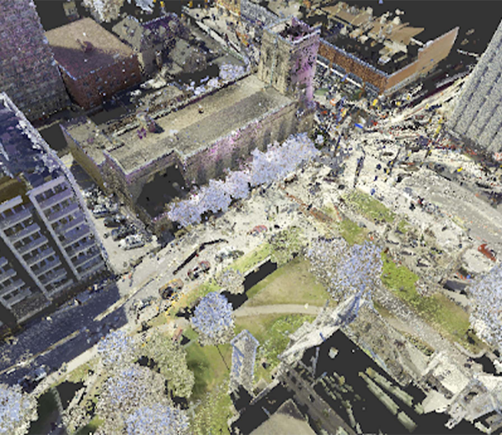
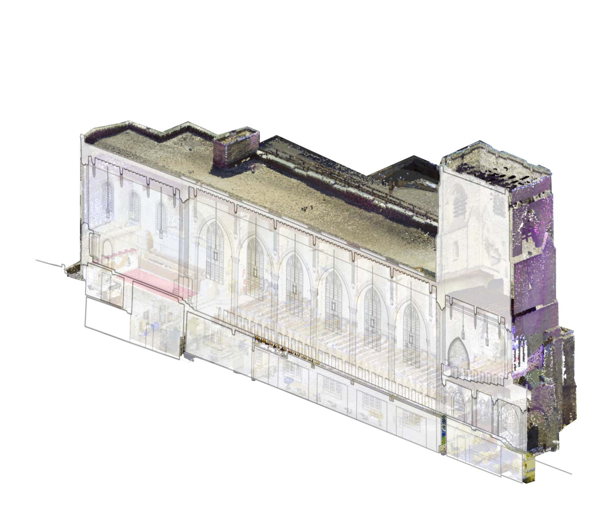

KNOX CHURCH DIGITIZATION
Professional work, 2022
AutoCAD, Recap, Leica Cyclone 360, Lapentor (panoramic tour), Photoshop
In this virtual tour, I was responsible for capturing and linking over 200 panoramic photos, researching the building's history, and researching UI options for the tour.
Go into fullscreen for a better experience.

Point cloud

Point cloud to CAD


Sections that I drafted in AutoCAD using point cloud data